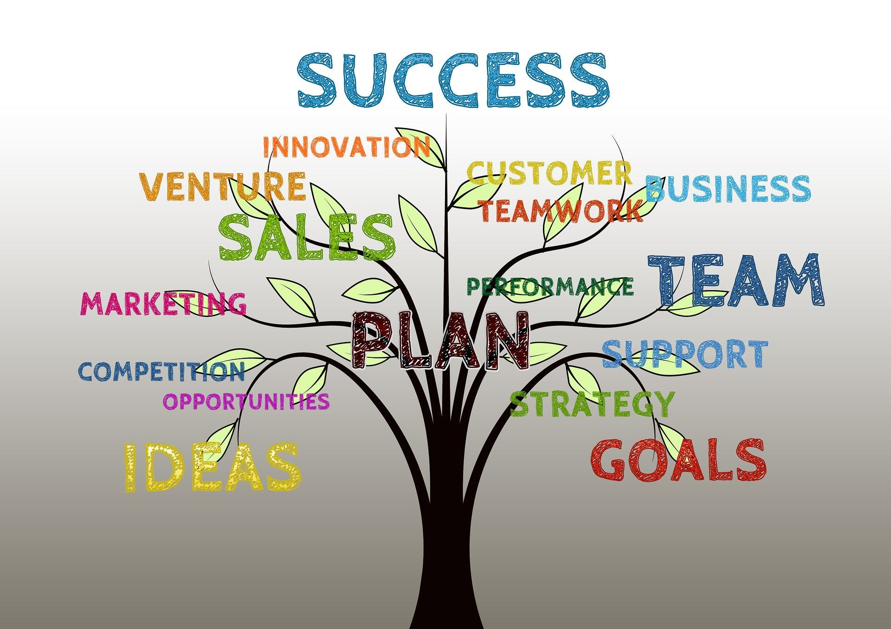

Profil
Planisense est un éditeur de solutions de planifications innovantes et intelligentes qui permettent, dans un contexte qui s’est complexifié, d’être plus flexible et plus performant.

Enjeux et objectifs
Planisense était à un tournant de son développement passée le cap des 5 ans d'existance.
- Augmentation significative du chiffre d'affaires
- Consolidation de sa position concurrentielle
- Accélération de la croissance
- Amélioration de la notorité sur son marché
- Bien être des salariés
Contributions remarquables
Stratégie Transversal
Dans le cadre de l'accélération de son développement, j'ai
contribué à
la définition, préparation et mise en oeuvre de la stratégie à 3
ans de
la société.
Cette mission a été effectué grâce à une méthodologie
éprouvée en commençant par des diagnostiques internes et externes de la
société.
Les choix stratégiques identifiés ont été testés
pour
ne garder que ceux en ligne avec les objectifs stratégiques de la start'up
Finance & administratif Spécifique
Cette mission spécifique a été marquée par la
modernisation des outils de finance et de comptabilité que j'ai mis
en
place comme : le suivi de la trésorerie, le suivi du chiffre d'affaires, tenue
du
budget...
Des procédures administrives ont été mises en
place pour fluidier les tâches administratives et gagner du temps sur les tâches
répétitives
Gestion de projet Transversal
En tant que chef de projet, j'ai eu à manager les projets
suivants:
- Le projet de R&D pour le développement de la nouvelle solution de
Planisense
- Les ateliers stratégiques ont mis en évidence une série de projets
internes
pour soutenir l'activité de Planisense.